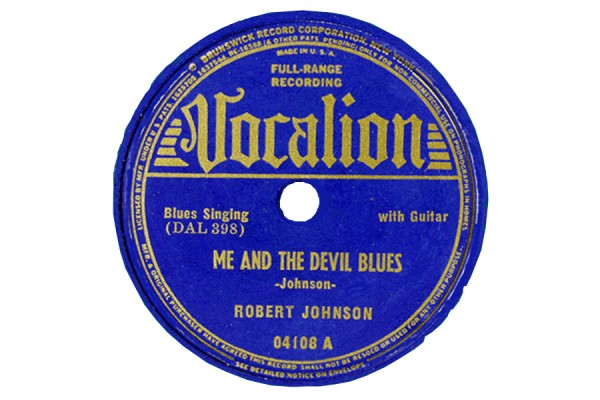
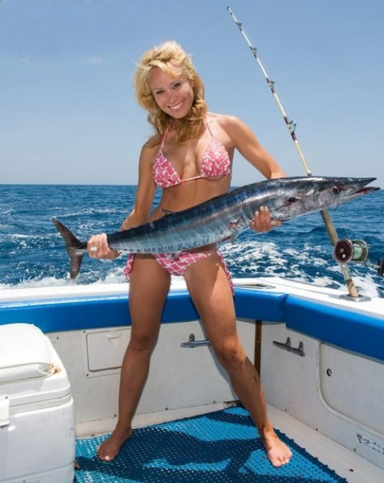
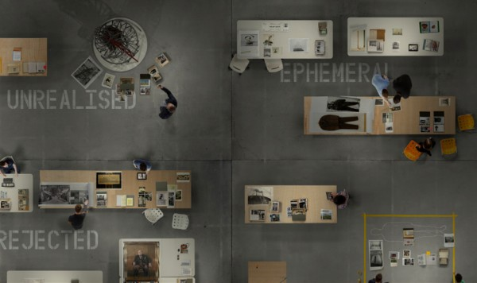
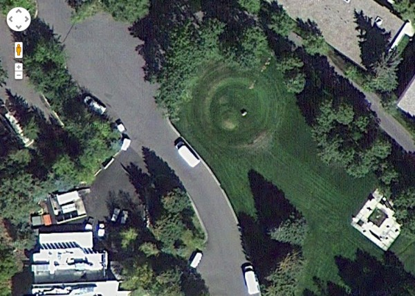

-
Selection No. 10
by Marco Antonini March 5, 2013
Robert Johnson’s original 78 recording, Me and The Devil Blues / Little Queen of Spades, 1937, Keith Richards Blues Collection. courtesy of the ARChive.
1.The idea that, hiding in plain sight somewhere in Soho, lies a perfectly organized, meticulously archived and scrupulously preserved 2-million records collection of ‘popular music of all cultures and races throughout the world from 1950 to the present’ is pretty amazing in itself. Add to this the fact that you can NOT access this collection (unless you privileged/ultra-talented self is currently enrolled at Columbia, or via ridiculously expensive a la carte arrangements) and you have the ARChive of Contemporary Music. Of course a board of advisors including Lou Reed, David Bowie, Youssou N’Dour, Keith Richards and Martin Scorsese (among others) also helps consolidate the aura of this place in my imagination. I am kind of hoping to never see it. Maybe only before I die… I will be let in with a special golden pass and, upon placing some undiscovered Robert Johnson acetate on the turntable, will be possessed by the Devil itself, streaming out of the grooves into my eye sockets, Raiders of the Lost Ark’s final scene style.
The Orion Bullets. courtesy of APOD.
2. Sometimes the life makes us feel bigger and more important that what we really are. New York and its ‘The World in a City’ feel definitely don’t help, in this sense. I get my daily dose of humilty and re-focus from NASA. This blog is pretty much self-expalnatory in its title, providing exactly what it says: An (often unbelievably good/original/relevant) astronomy picture per day. Is this the real life? Is this just fantasy? Who the hell would know… you have to trust them NASA guys. After all (if you believe…) they put a man on the moon. A man on the Moon! In any case: the cosmos looks so immense and sexy here that you wish you had one of those Time Square mega-screens on your bedrooom ceiling, set to slideshow this stuff on and on. I bet the site is on Trevor Paglen’s bookmarks, too.
woman holding fish. courtesy of Honza Zamojski.
3. When I was a kid, I really liked fishing. Growing up, I also realized that I liked women. And laughing. And contemporary art. Therfore polish artist Honza Zamojski’s Women Holding Fish tumblr totally makes my day. Before spending my time gazing at this impressive, quirky photo collection, I was fulfilling some other sort of Freudian fantasy by watching Vladimir Putin (eeek) hold dolphins, bears, tigers and a LOT of different dogs in his lap. In those pictures, Putin was often bare-chested, which kind of added to the whole awkwardness of it. Now I only watch consistently hot (or hott-ish) women holding fresh, colorful fish of all sizes and species. Thanks Honza for redirecting my attention to what really matters.
4. Now that VVORK is gone, I need another curator-friendly pics and assorted info aggregator. Uncopy is not bad. Just wish it was updated a little more often. The small texts (metaworks) and link sections are pretty good, too, sending you out to many more similar resources, visual and/or otherwise, many of which are available for download.
screenshot of the Gallery of Lost Art. courtesy of the Tate.
5. Who doesn’t love what can never come back? Ah! The eternal thrill of the invisible, the lost, the irreplaceable, urban myths and myths proper. I do know this is old-ish news (the site was launched a while ago) but I’m STILL addicted to Tate’s Gallery of Lost Art website. First and foremost, a tip of the hat to whoever designed this beautiful, dynamic site. Maybe I would have kept the Twilight Zone-y background drone a little lower but yeah, great job guys. This archive of ‘lost’ artwork covers all sorts of failed, destroyed, unrealized projects. From Bas Jan Ader’s disastrous trans-oceanic sailing expedition to the drawing that de Kooning donated for the realization of Rauschenberg mythical Erased de Kooning Drawing (1953). The site itself will vanish and add up to ‘lost’ art on June 2013 so check it out before it’s too late!
6. Whenever I’m out of ideas (or having clearly lame ideas, or not being able to work on better ideas, etc.) I summon the unbelievable animated shorts of Norman Mc Laren. Start with the Classic Boogie Doodle, above, for a quick brain massage. This Scottish/Canadian Academy Award and Cannes Film Festival winner jazzed the 50′s experimental film world up with a series of mesmerizing animated shorts. McLaren drew and colored directly on 35mm film blanks, switching between reductionist figuration and pure abstraction, as well as between proto- electronica and other music soundtracks with humor and gusto. His work is not only beautiful and energizing, but also important as an example of something thouroghly accessible, yet endowed with a superior and sophisticated understanding of color and line rooted in the avant-garde. Many videos are available on YouTube in decent quality.Want something a little darker and (even more) surrealistic? Len Lye is your man. A Neo Zeland-born globetrotter, Lye’s early flirtations with Surrealism shine through a body of exquisitely minimalistic pieces. Many in black and white, realized scratching the film surface directly.
Check the historical Free Radicals (1958), but don’t forget his early animation and stop motion animations, and that YouTube has many in various degrees of quality.
GoogleEarth view of Herbert Bayer’s Earth Mound, 1955. courtesy of MOCA Los Angeles.
7. I love Land Art, Earthworks, all of that. Therefore I painfully regret not making the trip to MOCA Los Angeles to see the game-changing Ends of Earth — the Miwon Kwon curated retrospective that rewrote large chapters of this ongoing art world saga. Fortunately for me and for everyone, they published an exhaustive catalog and superbly designed website that lets you visualize historical masterpieces, like Herbert Bayer’s 1955 (!) Earth Mound via full-screen Google Earth links. Almost like being there. Once more, Google Earth proves to be a great instrument, and platform for all sorts of serious and semi-serious research, as awesome blogs like Google Maps Mania clearly attest…think about this as a whole new way of imagining socio-political geography, at the tip of your finger.
8. What happens if you stimulate the skin of a longfin squid with vibrations from Cypress Hills’Insane in the Brain? This —
If the Vimeo is not enough you can go see the damn thing on a much bigger screen at Welcome to the Real, a show I curated as a NURTUREart off-site project. Open until March 30 at {TEMP} art space.

{kind=link}